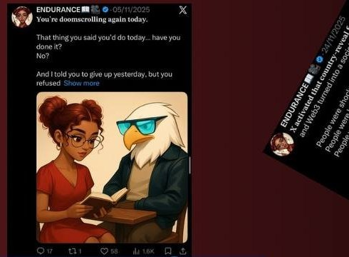
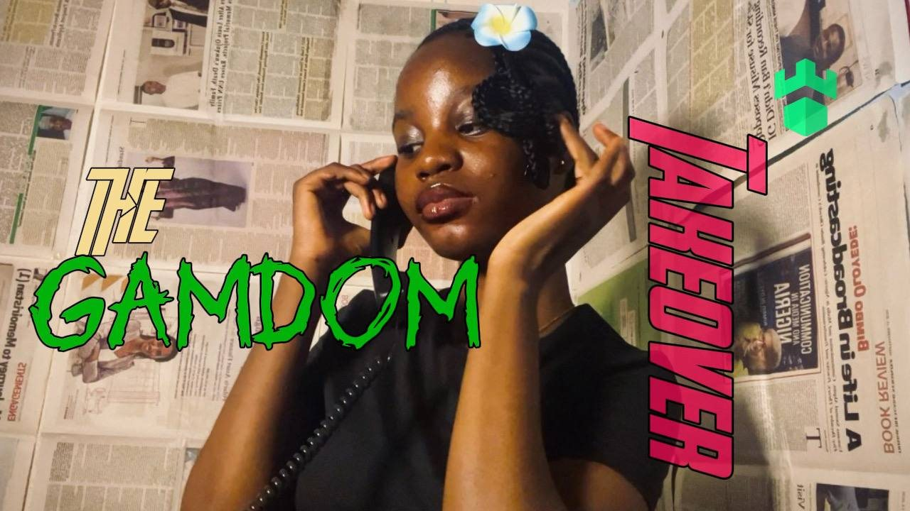
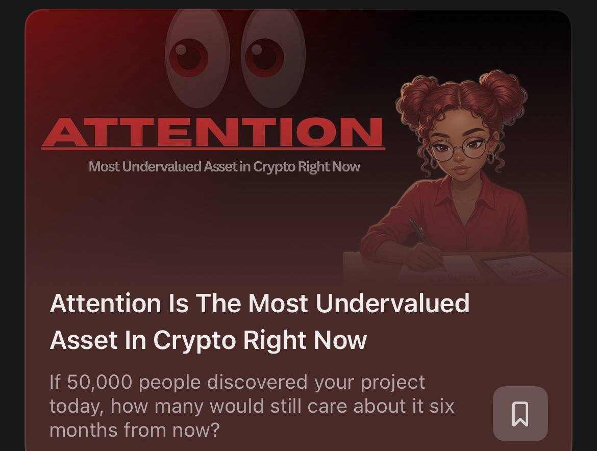

Content That Connects Ideas, Engages Audiences & Builds Brands.
Helping projects communicate their ideas, connect with audiences and tell better stories through content.
About me
I am Endurance, a Content & Creative Specialist passionate about turning ideas into engaging content through writing, creative thinking and storytelling.
From developing content strategies to writing and producing videos, I bring ideas to life through content.
Selected work, and the thinking behind it
Three projects, each opening into a full case study: the research, the strategy, the execution and the results.

Influencer · 9 months01Nige
Represented a Web3 learning and predictions ecosystem across X, Telegram and WhatsApp, shaping content around what the audience was actually asking.

Creator challenge entry02Gamdom
An original “Gamdom takeover” story told through a newspaper, a radio news broadcast and a phone call, produced entirely solo.

Independent research03Sovra
An independent look at what happens after a project wins attention, and how a waitlist can be nurtured instead of left to fade.
Videos I’ve written, shot and edited
Tap any video to watch it here.
What I bring to a project
Skills
- Content strategy and planning
- Creative direction
- Content research and analysis
- Graphic design
- Audience research
- Visual storytelling
- Copywriting and creative writing
- UGC creation
- Storytelling and narrative development
- Community engagement
- Scriptwriting
- Influencer marketing
- Video production and editing
Tools
Experience & contributions
- Content Lead — BEELIEVERS DAO30-day content challenge: reviewed and analysed content, gave feedback, proposed topics and organised activities.
- Influencer — NigeNine-month involvement across X, Telegram and WhatsApp.
- Brand AmbassadorPuffVerse, Nexverse and other Web3 projects.
- Community Growth Contributor — Agentic BetContent and community participation associated with 300+ community joins.
- Content Contributor — independent communityContent that helped a friend’s jobbers/alpha community attract 600+ members.
- Paid Content Creator / WriterWeb3 writing and creative content projects.
- Event Content StrategyContent strategy support for an in-real-life event.
- Independent Content CreatorWriting, video production, scripting, creative direction and editing.